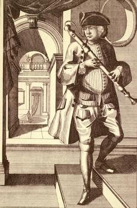
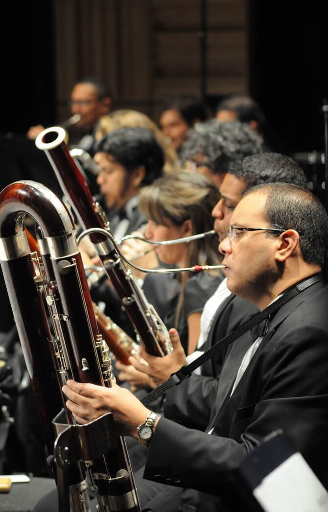

El Fagot.
Daremos aquí a conocer la evolución del Fagot, desde el punto de vista de los instrumentos históricos de su familia, más usados actualmente en la interpretación de la Música Antigua con instrumentos originales y copias de cada época. Son los instrumentos que podemos encontrarnos en cualquier auditorio o sala de conciertos interpretando Música Antigua, un estilo de interpretación que está tomando mucho auge en el panorama musical actual. También mostraremos una serie de aspectos y características que nos permitan acercarnos y conocer a uno de los sonidos más bellos y menos conocidos de la orquesta.
Historia del Fagot. Su evolución.
El origen de su nombre va directamente relacionado con el origen del propio instrumento. El primer nombre conocido como “faggot”, surgió en Francia en el S.XIV, y quería decir “un manojo de palos”. En cuanto a la palabra “Basson”, significa originalmente la versión del registro bajo de un instrumento. En el “Dioclesian” de Purcell, partitura de 1691 aparece la palabra “Bassoon”, y ésta ha sido utilizada en Inglaterra desde entonces. En la actualidad se le conoce con varios nombres dependiendo de cada país, en Estados Unidos e Inglaterra se le llama “Bassoon”, en Italia “Fagotto”, en Francia “Basson”, y en Alemania “Fagott”.
Dulcian (mediados S.XVI-S.XVII)
El instrumento antecesor y originario del actual fagot es el dulcian, que surgió en el S.XVI, llamado así porque era de sonido dulce y más apagado que otros más ruidosos, que existían en su misma época como las chirimías y los pommers.
El dulcian era un instrumento utilizado sobre todo para la música religiosa, se construía en diferentes tamaños, soprano, alto, tenor, y bajo, y solía acompañar las diferentes voces de la polifonía vocal en las iglesias y catedrales. Se construían sobre todo en madera de árboles frutales como el peral, y se hacían en una sola pieza, a diferencia del Fagot Barroco que se hacía en cuatro piezas.
En España, al dulcian se le llamaba “bajón”, y a los dulcianes más pequeños se les llamaba “bajoncillos”; fue un instrumento muy importante en la vida musical española, se utilizó incluso hasta principios del S.XIX. En la mayoría de iglesias y catedrales había “bajones y bajoncillos”; todavía podría aparecer alguno sin descubrir en algún cuarto o sótano de alguna iglesia. Las copias de dulcianes más famosas construidas actualmente para ser usadas en conciertos de música antigua son las basadas en los dulcianes que se encuentran en el Museo de Berlín, Museo de Linz, las del maestro español Melchor R.S, (cuyos dulcianes se encuentran en el museo del Conservatorio de Bruselas), y las del maestro J.C.Denner, que se encuentran en los museos de Bruselas y Nuremberg. Estos instrumentos solían tener dos llaves y su afinación original era a´=463-466hz, aunque también se hacían en a´=440hz.
Fagot Barroco (mitad S.XVII- mitad S.XVIII)
 El Fagot Barroco surge como una evolución del dulcian. Sobre la segunda mitad del S.XVII aparecen los primeros instrumentos construidos en piezas. En esta época destacó J.C Denner que construía fagotes en cuatro piezas y con tres llaves. En el S.XVIII, se le añadió la cuarta llave al Fagot Barroco.
Las copias más famosas de Fagot Barroco utilizadas en los conciertos de música antigua son las basadas en los instrumentos de J.H.Eichentopf, y Prudent Thrieriot.
J.H.Eichentopf (1686-1769), fue un constructor de instrumentos de viento que trabajó en Leipzig desde 1710 a 1749. Parece ser que existen vínculos de unión entre él y J. S. Bach,. La copia que se suele hacer es de los instrumentos originales de J.F.Einchentopf que se encuentran en los museos de Nuremberg y Praga. Es un fagot de cuatro llaves, con afinación a´ =415, utilizado sobre todo para la interpretación de la música de la época de J.S. Bach.
Prudent Thrieriot, fue uno de los más importantes fabricantes de instrumentos de su época. Trabajó en París con C.Bizey desde 1747 hasta su muerte en 1786. En la actualidad se hace una copia del Fagot Barroco de Prudent Thrieriot que se encuentra en el Museo del Conservatorio de Bruselas; es una de las más usadas en todo el mundo, se trata de un fagot de 5 llaves aproximadamente de 1770, un instrumento fácil de sonoridad y afinación, pero con el sonido muy similar a los fagotes barrocos de la primera mitad del S.XVIII.
Fagot Clásico (2 mitad S.XVIII y principios S.XIX)
La copia de Fagot Clásico más usada es la del fagot de Heinrich Grenser (Dresden, 1764-1813), que fue uno de los mejores fabricantes de instrumentos de viento madera de su tiempo; hizo además de fagotes, oboes, clarinetes y flautas. En concreto la copia es del fagot que se encuentra en la colección del Gemeemtemuseum de La Haya (Holanda), un fagot de nueve llaves, construido en 1810, y afinación a´= 430 hz.
Fagot Romántico (S.XIX)
EL Fagot Romántico es el menos usado, debido a que todavía la interpretación con instrumentos históricos del periodo romántico no ha llegado a su esplendor. La copia más usada es la de un fagot de Samuel Gottfried Wiesner (Dresden 1791-1868), construido sobre 1830, y que tiene 17 llaves, con afinación: a´=435/438 hz, casi la afinación moderna(a´=440/42hz).
Fagot Moderno (S.XX)
En la actualidad podemos decir que el Fagot Moderno existe en dos versiones o sistemas, el fagot sistema alemán o “Heckel”, y el fagot sistema francés o “Buffet”.
El fagot sistema francés o “Buffet”, es llamado así porque fue Buffet-Crampon, junto con el profesor Jancourt, quien impulsó el desarrollo en 1847 del modelo de fagot francés de 22 llaves, el cual se estableció desde entonces con algunas pequeñas modificaciones como el fagot estándar del sistema francés. Este fagot apenas se usa, solamente un poco en Francia, su país de origen, donde casi ha desaparecido también. Quedan pocos fagotistas en orquestas francesas que lo toquen, y en cuanto a su enseñanza, los alumnos en los conservatorios franceses, comienzan a estudiarlo durante cuatro o cinco años, y después pasan a estudiar el fagot sistema alemán o “Heckel”, que es el más aceptado en todo el mundo tanto por los fagotistas, como por los directores de orquesta.
Al fagot sistema alemán se le llama también sistema “Heckel”, porque Joham Adam Heckel, que trabajó con Carl Almenraeder en su factoría de Biebrich-Wiesbaden en 1831, fue junto con su hijo Wilhelm Heckel y sus descendientes quien perfeccionó y desarrolló el fagot alemán Heckel hasta nuestros días.
Contrafagot.
El contrafagot es el único instrumento auxiliar de la familia del fagot. Es básicamente similar en construcción al fagot pero mucho más grande. Está doblado de tal manera que consta de cuatro tubos paralelos de madera, conectados en los extremos, por lo que posee cuatro doblamientos en ” U”, terminando en una campana de metal hacia abajo, aunque también existen terminaciones con la campana hacia arriba. El contrafagot pesa unos 10 Kgs, y para tocar se apoya en el suelo mediante una pica. Está construido en madera de arce y suena una octava por debajo del fagot, puesto que su tubo sonoro es de 5´58 mts Utiliza también caña de doble lengüeta pero es bastante más grande que la del fagot. El Contrafagot más utilizado actualmente es sistema alemán o Heckel.
¿Cómo es?
El fagot es un instrumento de viento madera y está construido en madera de arce fundamentalmente. Suena con caña de doble lengüeta, similar a la del oboe pero más grande. Su afinación es a´= 440-442hz. Tiene una longitud de 1´35 metros, y está dividido en cuatro partes principalmente: la campana, la pieza alada o tenor, la pieza grave o baja, y la culata. En la pieza alada se coloca un tudel de metal que tiene forma curvada, casi de “S”, y a éste se le acopla una caña de doble lengüeta, que es la que produce el sonido realmente. La característica principal del fagot es el doblamiento de su tubo sonoro, mediante un codillo metálico en forma de “U”, situado en la parte inferior de la culata y que no se ve, ya que está cubierto para su protección. Este doblamiento fue el que acortó el tamaño externo del fagot, puesto que la longitud de su tubo sonoro total es de 2´54 metros (es decir mediría eso si lo estirásemos en línea recta). Su tubo es de sección cónica, variando desde una anchura de 4mm, en el extremo más estrecho del tudel, hasta unos 45mm en la campana. El fagot consta de 24 llaves, algunas de ellas tiene unos pequeños rodillos para facilitar el desplazamiento de los dedos y tiene también una pequeña pieza llamada “muletilla” situada en la culata, que sirve para apoyar la mano derecha y facilitar la comodidad a la hora de tocar. Suele llamar la atención además de por su tamaño, por la campana que tiene, a modo de pequeña chimenea con un aro blanco en su extremo final. Su color viene determinado por el tipo de tinte y barniz utilizado en su elaboración, a veces es de color marrón, otras es rojo, y otras puede parar en color oscuro. Pese a lo aparatoso que puede resultar ver su tamaño respecto a los otros instrumentos de viento madera, resulta cómodo y fácil de tocar, suele tocarse con collar o con una correa que se acopla en la culata, y resulta un instrumento bastante ágil y manejable.
¿Por qué suena como suena?
El fagot tiene ese sonido tan característico por dos elementos fundamentales, la caña de doble lengüeta y la gran longitud de su tubo sonoro cónico de 2´54 metros construido en madera.
El sonido se produce de la siguiente forma: al pasar el aire a través de la caña, éste hace que se pongan en movimiento vibratorio periódico sus dos lengüetas produciendo una onda sonora, la cual será amplificada por el propio instrumento, produciéndose así el sonido. Se podría decir que el aire junto con la caña produce el sonido y el tubo sonoro del fagot hace de elemento resonador. Lógicamente para que se produzcan diferentes sonidos, están los orificios de diferentes tamaños que tiene el tubo sonoro, y que se abren y cierran con los dedos y las llaves. Como vemos la caña juega un papel fundamental y prioritario en el fagot, sin ella no suena, y dependiendo de las condiciones de ésta puede sonar mejor o peor y estar más o menos afinado, además le proporciona ese ‘staccato’ tan característico que posee. La amplia longitud de su tubo sonoro le da la capacidad de tener un registro muy extenso, tres octavas y media (más de 48 sonidos), con la posibilidad de transmitir todo tipo de sentimientos musicales y de crear situaciones sonoras diferentes y muy variadas. Muchos directores de orquesta le llaman el “todoterreno” de la orquesta, por su versatilidad funcional y por sus cualidades para adaptarse a cualquier situación. El sonido del fagot es pues un sonido grave, rico en armónicos y popularmente se dice que de los instrumentos de viento es el que más se asemeja a la voz humana.
¿A partir de qué momento tiene sitio en la Orquesta?
 Aparece por primera vez en la orquesta en 1667, en la ópera “Il Pomo d´oro” de Antonio Cesti (1623-1669), aunque otras fuentes indican su primera aparición en la orquesta en 1659 en la ópera francesa “La pastorale d´Issy”, de Robert Cambert (1628-1677). De cualquier forma es evidente que la evolución del fagot coincide con la evolución de la orquesta, que podríamos dividir en dos periodos:
El primer periodo tiene su origen hacia finales del S.XVI y finaliza hacia la mitad del S.XVIII, con la muerte de Bach y Haendel; en este periodo se puede considerar a la orquesta como ” de cámara”, en la que se le daba al fagot un papel más bien discreto, de bajo continuo reforzando los bajos de la cuerda,. Sobre todo. J. S. Bach, compuso gran cantidad de música en la que interviene el fagot, y Haendel continuó dando al fagot un papel secundario, con la notable excepción de su oratorio “Saul”, donde les da a dos fagotes un papel a solo bastante importante. El periodo de transición entre Bach y Haendel y la moderna orquestación de Haydn y Mozart fue cubierto por Gluck, quien destaca en determinados momentos las intervenciones del fagot y del oboe.
El segundo periodo comienza con la moderna orquestación de Haydn y Mozart, en la que el fagot empezó a independizarse como parte principal en la orquesta. Haydn empieza a destacarlo sobre todo en sus últimas Sinfonías. Mozart lo destaca más en sus sinfonías, óperas, y conciertos para instrumentos; se podría decir que es el que liberó al fagot de la tarea de reforzar y duplicar bajos insignificantes, y lo separa del cuarteto de cuerda para unirlo a los instrumentos de viento.
{kind=link}